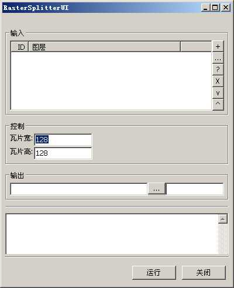

RasterSplitter是一个把栅格数据进行瓦片切割的工具。该工具由linux_23(李林)编写。。
实用类：geosings.tools.RasterOperator.RasterSplitter
UI控制面板类：geosings.tools.ui.RasterSplitterUI.RasterSplitterUI
运行主界面如下：

主界面分为四个部分。一个是图层输入面板，一个是控制参数面板，一个是图层输出面板。一个是过程输出显示面板。
图层输入面板和图层输出面板的介绍可以看链接文档。最主要的核心在于控制 面板。
| 瓦片宽 |
导出瓦片宽 默认为256 |
| 瓦片高 |
导出瓦片高 默认为256 |
| geosings, RasterSpliter | 返回主目 录 |